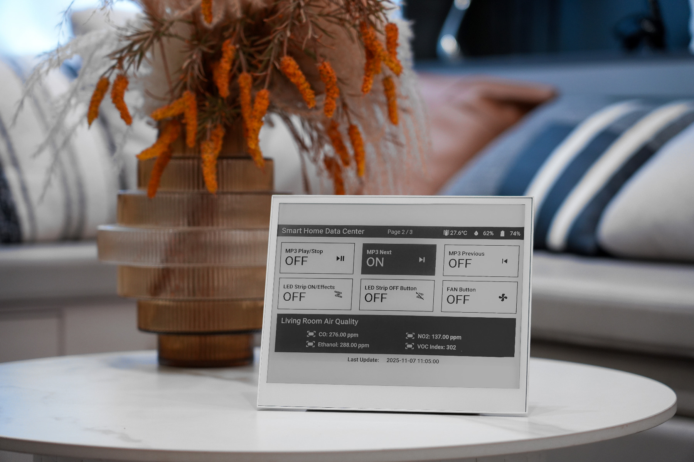

Твой выбор · большой экран с касанием
Комплект с рамкой ↗
E1003 без рамки ↗
Рамка отдельно ↗
Seeed reTerminal E1003
10,3″ с касанием и самой высокой заявленной автономностью в линейке Seeed: до 6 месяцев. Крупнее «фоторамки», зато пункты списка можно сделать большими и нажимать пальцем.
- Экран
- 10,3″ ч/б, 1404 × 1872, 16 уровней серого, полное обновление около 3 с
- Касание
- ёмкостное, контроллер GT911; в ESPHome нужна версия 2026.7.0 или новее
- Подсветка
- нет (на странице товара, в вики и в даташите не упомянута)
- Батарея
- 3000 мАч. Seeed: до 6 месяцев «в режиме низкого потребления при одном обновлении в сутки»
- Кнопки
- обновление экрана, страница вверх и вниз, выключатель питания
- Размер
- 224 × 187 × 18,6 мм; вес производитель не указывает
- Стена
- рамка Seeed за $20: алюминий, 240 × 292 × 34 мм, 423,5 г. В комплекте переходная пластина, две петли-подвеса, 12 винтов, отвёртка и подножка
- Wi‑Fi
- только 2,4 ГГц, плюс Bluetooth 5.0
Seeed · без налогов и доставки
$179,90 с рамкой
$159,90 без рамки · ≈ R$ 912 с рамкой
цена со страницы магазина
С налогами · ориентир
Рио ≈ R$ 1 752–1 825
с рамкой, курьером; без рамки R$ 1 557–1 622
мой расчёт, не цена магазина
Подвох с батареей, и как его обойти. В обычной прошивке E1003 во сне тянет около 5 мА: два вывода (GPIO39 и GPIO48) остаются «плавающими» и держат включённой периферию. Так 3000 мАч хватает примерно на 25 дней (мой расчёт: 5 мА × 24 ч = 120 мА·ч в сутки), автор конфига ar0v3r даёт оценку 20–30 дней. Он зафиксировал эти выводы на время сна, и его мультиметр показал меньше 100 мкА. Для прошивки TRMNL такое же исправление предложено в PR №715: за 19 дней батарея теряла 0,53% в сутки против 2,9% на стандартной (issue №572). Вывод: собирать ESPHome на основе конфига ar0v3r.
Сколько протянет чек-лист (мой расчёт по замерам ar0v3r: проснулся на ~20 с при ~185 мА, это около 1 мА·ч; сон до 2,4 мА·ч в сутки). Пять нажатий плюс одно пробуждение после полуночи для сброса: ~8,6 мА·ч в сутки, по расчёту это больше полугода, на деле упрёшься в заявленные 6 месяцев. Если будить доску каждый час, чтобы подтягивать изменения из Home Assistant: ~27 мА·ч в сутки, около 110 дней. Расчёт не учитывает саморазряд и износ батареи.